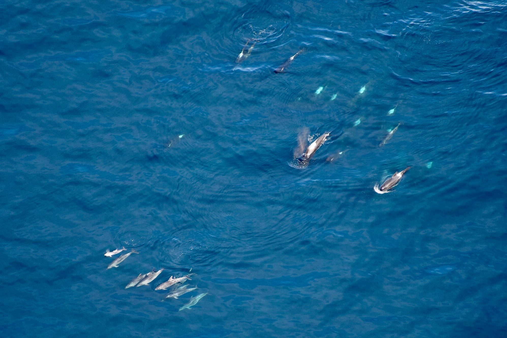
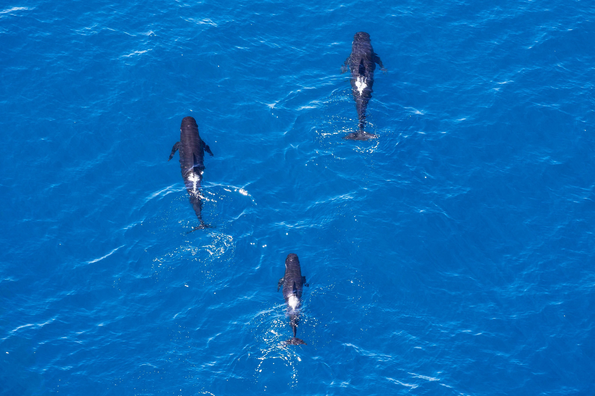

Mysteries of the Deep
Ever so often we are treated to visits from some of our offshore friends, the Long-Finned Pilot whale.
The Pilot whales name originates from the belief that each pod followed a ‘pilot” in the group. This has since been disregarded however the name has stuck.
The majority of our sightings for the Long-Finned Pilot whale occur during the spring and summer months and occasionally they will stay around our shores for up to 2 or 3 days. It is known that they can be found throughout the Southern Ocean, however the abundance of the population is not well understood.
Most often they appear to be organised in social units ranging between 20 to 30 individuals as seen with the pod this Friday. However, there have also been sightings as well as stranding data that shows they can also form large pods of several hundred individuals.
Due to their offshore nature, unfortunately most of what we do know about New Zealand’s population of Pilot whales comes predominantly from stranded individuals.
Almost half of the world’s 89 species of whale and Dolphins have stranded on our shores, but Long finned Pilot whales are the most numerous cetaceans to strand. Why Pilot Whales are such prolific standers, is still not well understood. However, the most common theory is that echolocation from a deep offshore species is not well suited to the shallow gentle slopes of some of New Zealand’s shorelines. Most of the stranding’s also tend to happen in the summer, suggesting that they are following their food source inshore.
With such tragedy playing out every year around our coast Project Jonah a New Zealand charity dedicated to the welfare of Marine mammals was formed. Made up solely of volunteers, the charity trains up willing individuals into marine mammal medics, whom can be called upon when a stranding arises. Although it is not always possible to save every individual Project Jonah can and does save many life’s that would otherwise be lost.
If you are interested in more about Project Jonah’s work or interested in becoming a volunteer yourself check out their website: www.projectjonah.org.nz
 
Interestingly, when we are lucky enough to see Pilot whales in Kaikoura, they are more often than not accompanied by another species – Offshore / Oceanic bottlenose dolphins.
There are two forms of Bottlenose dolphins that are found in New Zealand waters. Coastal bottlenose dolphins and Oceanic bottlenose Dolphins. The Oceanic’s are a lot bigger than their coastal relatives and are often seen traveling with other species.
Whether there are long term associations between the same individuals of both pilot whales and Oceanic bottlenose, we do not know. However a study between Oceanic bottlenose and False killer whales (a close cousin to the Pilot whales) in New Zealand has been recorded and can show relationship between individual of both species spanning over 10 years.